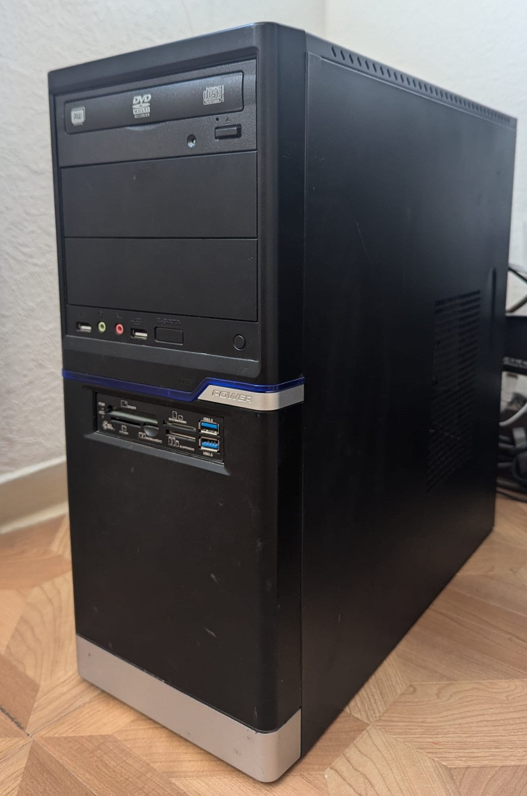

My home server is built around an ASUS P7F-M uATX motherboard paired with an Intel Xeon X3450 processor, featuring 4 physical cores and 8 virtual cores with VT-x support. It has 16GB of DDR-3 RAM, a 64GB SSD where the operating system is installed, and a 500GB HDD for storage. It has no case and simply sits on a small table — one benefit being that no additional case fans are needed. Networking is handled through a small USB Wi-Fi adapter for wireless connectivity. The motherboard offers six SATA ports and multiple PCIe slots for expansion, and the system is cooled with a standard CPU fan and heatsink. Power is supplied by a 750W PSU, and the server is turned on via a 16A house breaker rather than a switch. (I didn't have any switches)
The server runs Ubuntu because Linux is lightweight, stable, and ideal for older hardware, while still being capable of running all the services I need. I have a small public Telnet server set up that can be accessed through the terminal; it responds to specific commands and was mostly a fun project because I enjoy how simple Telnet is. Remote access is also available via SSH. On the local network, the server acts as a NAS using CasaOS, letting me store and access files from any device at home. Also the server runs OpenWebRX, a software-defined radio (SDR) receiver that allows me to listen to radio signals with the connected SDR device and it is publicly accessible. Finally, it also hosts this website, making it a versatile home server.
My server doesn't have a public IPv4 address because my internet plan uses DS-Lite. However, my ISP does provide a public IPv6 address, so I use that instead. To make the server publicly reachable over IPv6, I added an AAAA record for my domain leviserver.eu pointing directly to my home server's public IPv6 address. On the server I run nginx as a reverse proxy, which listens on port 80 and routes incoming traffic to the correct service based on the subdomain. This allows me to host multiple services on the same server and access them via subdomains like ishir.leviserver.eu for my website.